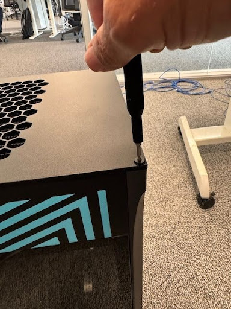
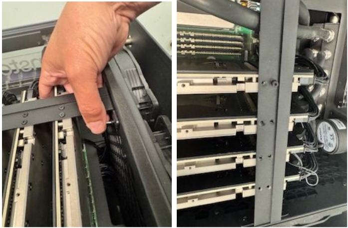
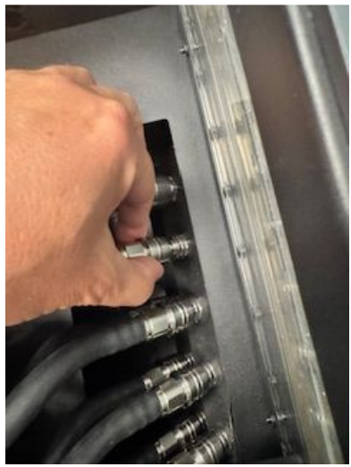
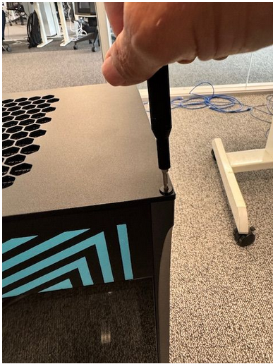

Support and Troubleshooting
Software Setup Support
For software setup, visit our software setup page.
BIOS and Hardware Support
For BIOS updates, non-Tenstorrent drivers, and other hardware support, visit the ASRock product page.
Tenstorrent Support
For support with the Tenstorrent n300 Tensix Processors and related Tenstorrent software, you can visit the Tenstorrent Discord server or contact support@tenstorrent.com with additional questions.
Troubleshooting
Stability/reboot issues (BIOS reset)
If for whatever reason the BIOS has been reset (for example, an update to the BIOS), a setting change needs to be made to prevent the system from having reboot issues.
In the BIOS, find the following setting:
Advanced -> AMD CBS -> NBIO Common Options -> PCIe Aer Reporting Mechanism
And change the setting to OS First.
Boot issues or cards not appearing in software (unseated cards)
If you’re having issues with delayed boot times or booting at all, or cards aren’t appearing in TT-SMI or other software, it’s possible that in shipment, one or more n300 cards in TT-QuietBox become unseated.
Note that some technical expertise and caution will be required to avoid damaging the system components.
To fix this issue:
Lay the system on its side to access the PCIe cards. Unscrew the top of the box with a 2.5mm security hex bit.

Remove the front glass panel and put it somewhere safe; safety glass is breakable.

Remove the center retention bar and PCIe bracket screws. Use the 2.0mm security hex bit to unscrew the middle bar holding the PCIe cards.

Remove phillips screws connecting PCIe shields to back of computer.
Pull quick disconnect shield back and pull on hose to remove tubes.

Cards can then be carefully removed from PCIe slots.
Manually reseat the PCIe cards while holding the motherboard to prevent flexing.
Reinstall the retention mechanisms.
Boot the system and confirm the PCIe cards are appearing in the TT-SMI utility.
If the POST code reads
00for a long duration during the system boot, power the system down. Then remove and reinstall the CMOS battery after shorting the clear CMOS pad (CLRMOS1) and power the system.
Coolant is running low
Over time, as is typical with liquid-cooled systems, your TT-QuietBox will need to have its coolant refilled.
The coolant used in TT-QuietBox is a combination of Mayhems XT1 Clear Concentrate and distilled water. Note that the water must be distilled; other kinds of water may contain contaminants which can damage your system.
The coolant concentrate needs to be mixed with distilled water in the ratio of 38:62; to produce 1000ml of coolant, 380ml of Mayhems XT1 Clear Concentrate needs to be mixed with 620ml of distilled water.
To top-up the coolant in your TT-QuietBox:
Remove the top cover of the system by removing the four corner screws.

On the reservoir, you should see a fill port and a purge port. The port closer to the long side of the reservoir is the fill port (the port near the top of the image below); the port closer to the short side of the reservoir is the purge port (the port near the bottom of the image below).

Unscrew both G1/4 plugs and use the fill port for adding coolant; the purge port will release air trapped in the cooling loop.
Rescrew the G1/4 plugs and replace the top cover of your system.
Some air typically enters the loop when coolant is refilled; if you hear bubbles or a light buzz from air moving through the loop, this is normal. You can accelerate the movement of air into a single pocket in the reservoir by gently rocking the system back and forth, but this issue is harmless and typically resolves itself. It’s not unusual for the coolant level in the reservoir to lower as air moves through the loop and is replaced by coolant.